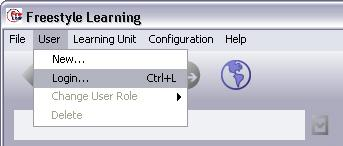
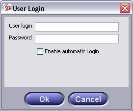

To create or work with a Learning Unit, you first have to log in by choosing "User" / "Login" from the menu.

In the Dialog that appears, type in your user name and password and press "OK". If you are using your local FSL installation always as the same user, you can check the "Enable automatic Login" box.

Next time you launch FSL, you will already be logged in. To disable Automatic Login, choose "User" / "Login" from the menu and log in again with leaving the Automatic Login checkbox unselected. Standard user names and password are listed in the table below.
| User Name: | Password: | Usage: |
| learner | learner | Default for working with Learning Units |
| author | author | Default for creating Learning Units |
Back to Main Help Page